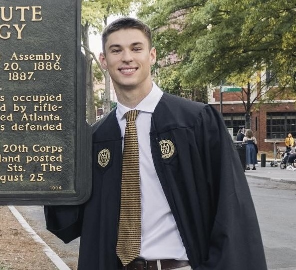

I am a second-year math Ph.D. student at Vanderbilt University working under Dan Margalit. My research interests involve mapping class groups, geoemtric group theory, and hyperbolic 3-manifolds.
I got my Bachelor's degree in Mathematics with a minor in Computer Science from Georgia Tech.
Publications
-
Unknotted Curves on Genus One Seifert Surfaces of Whitehead Doubles
Joint work with S. Dey, V. King, B. Tosun, B. Trace, Pacific Journal of Mathematics, 330 (2024), 123-156.
Attended Conferences and Workshops
- Topological and Geometric Structures in Low Dimensions - SLMath, Jan. 21-30 and March 23-27, 2026
- SEC Geometry and Topology Workshop - University of Alabama, June 2-4, 2023
- Georgia Topology Conference 2023 - University of Georgia, May 24-28, 2023
